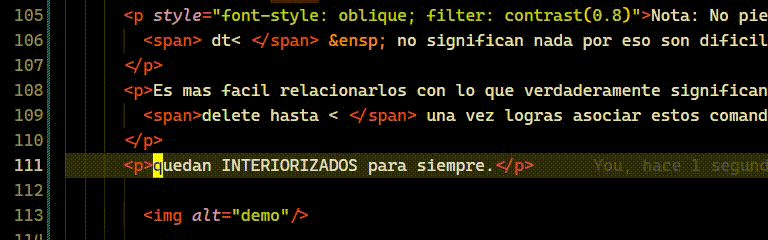
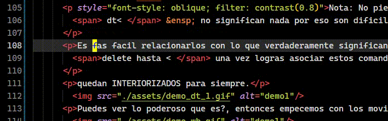
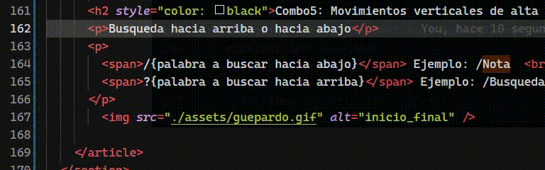
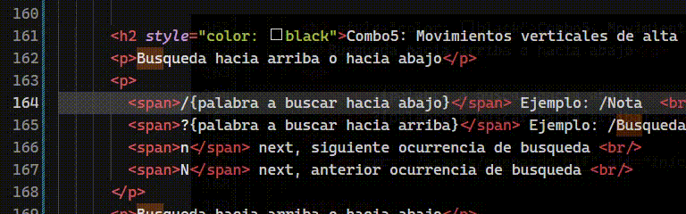
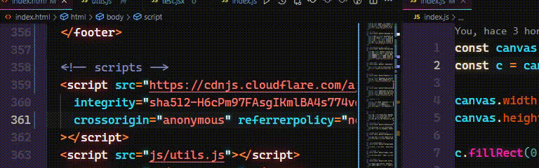
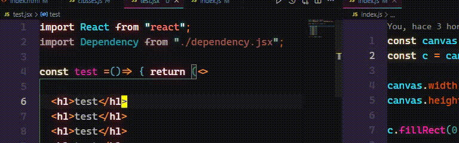
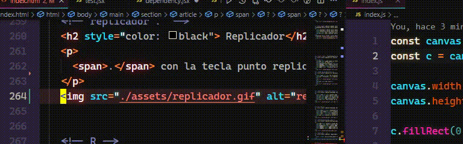
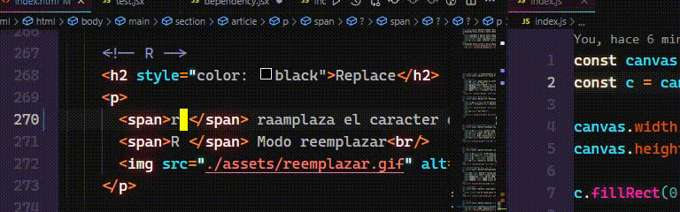
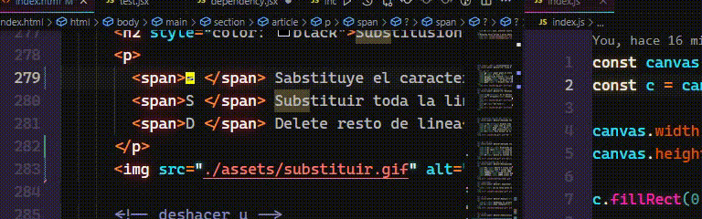

10
- Dominando los movimientos -
Combo1: Pasitos de tortuga
Una vez que domines el movimiento tortuga ya estaras listo para empezar a hackear los movimientos y moverte modo liebre, guepardo o gokú teletransportandote.
Nota: La idea principal es asociar o referenciar los comandos como dt< hacia lo que quieres hacer por medio de la via corta, en este caso en ingles significa: delete until < eliminar hasta <
Así los comandos quedan INTERIORIZADOS para siempre.
Puedes ver lo poderoso que es?, entonces empecemos con los movimientos por palabras, si como su nombre lo dice palabras en ingles words que es diferente a WORDS jejejej si puedes ir haciendote la idea que la velocidad de movimiento cambia si presionamos w o W a su vez si queremos ir hacia atras usamos la b o B que en ingles es back
Combo2: Movimiento horizontal, busqueda
Dentro de la misma linea horizontal puedes avanzar a caracteres especificos con la palabra find osea la tecla f puedo moverme buscando los espacios con el comando f space o retrocediendo F space con eso es suficiente para entender la dinamica. f{caracter} |or| F{caracter}.
f. find .
f( find (
f/ find / F/ Find /
Nota: Siempre hay dos sentidos, infinidad de comandos posibles.
Combo3: Inicio y final de linea horizontalmente
0 inicio
$ final
% Saltar a la coincidencia ({[]}).
Letra Inicial - Letra final en modo insertar
I i mayuscula -> Inicio
A Al final
VIMotion tiene tres modos, cursor - insertar - seleccionar
y como todos insertar tene dos sentidos i, I y a A.
i tecla i
a tecla a
o open linea debajo
O Open linea arriba
Felicidades: ya tiene lo suficiente para moverse en modo liebre.
Combo4: Movimiento vertical como guepardo
Fast Movement
Nota: aqui ya eres libre de decidir como relacionar las teclas con tu forma de pensar
( ) fast vertical movement
{ } fast vertical movement

Combo5: Movimientos verticales de alta precisión con patrón de búsqueda
Busqueda hacia arriba o hacia abajo
/{palabra a buscar hacia abajo} Ejemplo: /Nota
?{palabra a buscar hacia arriba} Ejemplo: ?Busqueda
n next, siguiente ocurrencia de busqueda
N next, anterior ocurrencia de busqueda
Busqueda hacia arriba o hacia abajo
  - Teletransporte como kakaroto -
T1: linea 0 -> cualquier linea - verticalmente
gg gugol gugol,te lleva a la linea cero o inicio del documento
G al final
gg{numero_de_linea}G linea exacta
gg100gg tambien funciona y te lleva a la linea 100
gg50enter lo mismo -> linea 50
ggdG Elimina todo el documento
T2: Movimiento 3d
gd Go to definition de mis favoritos y mas usados
alt + ArrowLeft Devolver

gf Get file

Editando texto: Modo hardcore
dd Elimina toda la linea -delete-
yy Copia toda la linea -yank-
p Pegar Paste
v Modo seleccionar
Esc Para escapar de la mayoria de los comandos y te situa en modo movimiento - cursor
Editando texto: Modo hardcore
de Eliminando palabras
dt space Eliminando hasta el espacio
dt / Elimina hasta el /
dt ' Elimina hasta la '
db delete en sentido contrario delete back
Multiplicadores
4dj Delete 4 lineas hacia abajo
4yk yank 4 lineas hacia arriba
d1000enter delete 1000 lineas
10000dd 10000 lineas delete
10000yy 10000 lineas yank -copy-
Replicador
. con la tecla punto replica último cambio

Replace
r Reemplaza el caracter debajo del cursor
R Modo reemplazar

Substitusion
s Substituye el caracter debajo del cursor
S Substituir toda la linea
D Delete resto de linea

u Undo -deshacer-
ctrl z Undo
ctrl r Rehacer
ctrl shif z Rehacer
:wq write quit -guardar salir-
:wq! write quit forzar
:q! force quit
esc ZZMi favorita la salida del zorro
Substitusion en todo el documento
%s/w/s/g%s sustitucion /word a substituir /substucion /g aplica los cambios
%s/"/'/gEjemplo: substituye todas las comillas dobles por comilla simple
Navegacion en pestañas o grupo
alt {2}alt numero de pestaña
ctrl {2}ctrl numero del grupo de pestaña
Autoguardado
ctrl ,ctrl , abre settings de VSC y en el primer apartado AutoSave escoger afterDelay
Emmet: wrap
f1 wrap enter + namewrap with etiqueta
VIM: motion
space space motion objetivo si tienes habilitada esta opcion con la combinacion de teclas 2 veces espacio y una direccion jklm entras en modo leader VSC te resaltara las opciones precisas a donde quieres ir
space space k , space space arriba y al objetivo , me situara allí